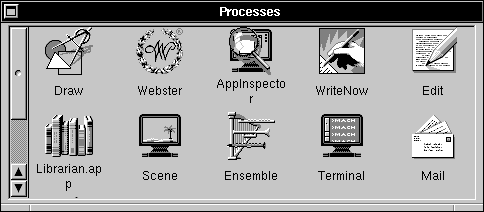
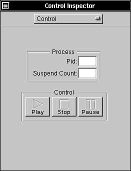
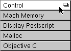
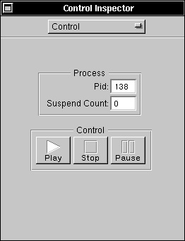
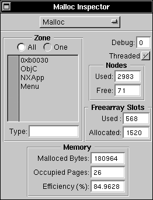
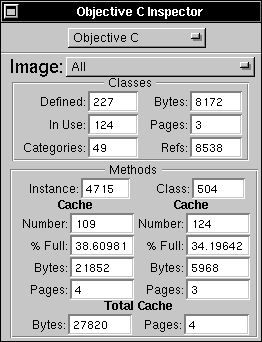
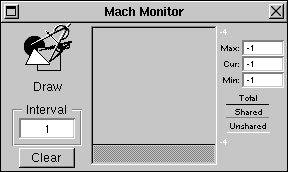

Copyright ©1995 by NeXT Computer, Inc. All Rights Reserved.
| 9 |
The Process Monitor Application
| Process Monitor can be used to examine any running process. Process Monitor lets you pause or kill a process, and provides several types of information about a running process or application, including: Mach memory usage, Display PostScript®, and the run-time environment. |
| Selecting a Process: The Processes Panel |
|  |
| When Process Monitor starts up, the Processes panel appears. This panel contains an icon for each of the applications running on the machine. You can also see processes that aren't associated with applications by choosing the Show Non Apps command in the Processes menu.
You can select any process shown in the Processes panel by clicking its icon. Once you select a process, an inspector panel appears that lets you see various types of information about the process. You can update the contents of the Processes panel to include any processes that have been started since the panel was displayed by choosing the Update command in the Processes menu. |
| Inspecting a Process: The Inspector Panel |
|  |
| The inspector panel is actually a generic name for five different Inspectors that are available. |
|  |
| Press the button at the top of the inspector panel and drag to choose the desired Inspector. These Inspectors are described in the following sections.
The Control Inspector |
|  |
| The Control Inspector displays the process ID of the selected process and indicates whether the process is suspended (paused) or running. You can use the Pause and Play buttons to pause and resume the process. Click the Stop button if you want to kill the selected process.
The Display PostScript Inspector |
|
| The Display PostScript Inspector displays information about the amount of backing store and virtual memory currently used by the selected process.
The Malloc Inspector |
|  |
| The Malloc Inspector displays information about the dynamic memory usage and memory allocation efficiency of the selected process.
The Objective C Inspector |
|  |
| The Objective C Inspector displays information about the run-time system characteristics of the selected process. |
| Monitoring Memory Usage: The Mach Monitor |
|  |
| The Mach Monitor panel appears when you choose the Monitor menu's Start Monitor command (this command is enabled only when the the Display PostScript Inspector is open). The Mach Monitor provides a running record of information about the memory usage of the monitored application or process.
To clear the contents of the Mach Monitor display, choose the Clear Monitors command from the Monitor menu. |
| Process Monitor Command Reference |
| This section describes the application-specific menus and commands available in Process Monitor. For descriptions of standard menus and commands, see the User's Guide.
Commands in the Main Menu Process Monitor's main menu contains the standard Info, Edit, Windows, Print, Hide, and Quit commands. The Process and Monitor commands display submenus that are described in the following sections.
Commands in the Processes Menu The Processes menu contains the following commands for interacting with the Processes panel: |
| Command | Effect | |
| Update | Updates the contents of the Processes panel to include any processes that have been started since the panel was displayed. See "Selecting a Process: The Processes Panel" for a description of this panel. | |
| Show Non Apps, | Show Non Apps causes the Processes panel to show all | |
| Hide Non Apps | processes, not just those processes associated with applications. Hide Non Apps causes the panel to show just application processes. |
| Commands in the Monitor Menu
The Monitor menu contains the following commands for displaying and using the Mach Monitor panel: |
| Command | Effect | |
| Start Monitor | Displays the Mach Monitor panel, which monitors the memory usage of the monitored application (see "Monitoring Memory Usage: The Mach Monitor"). This command is enabled only when the the Display Postscript Inspector is open. | |
| Clear Monitors | Clears the contents of the Mach Monitor panels. |